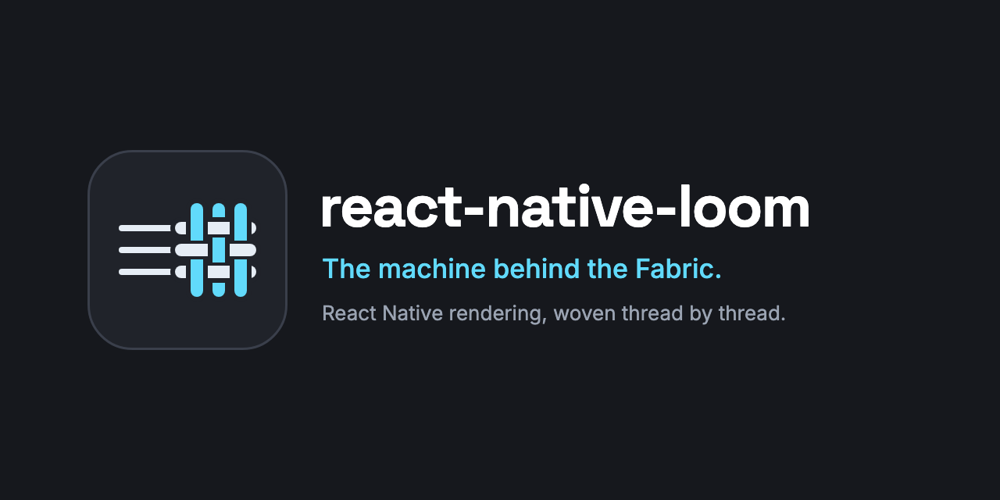
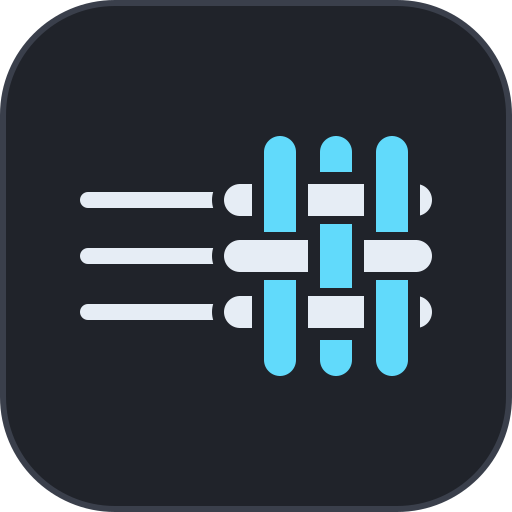
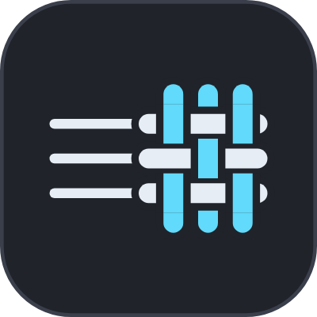
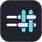
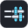
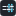

Loom
react-native-loom · mark: Threads into Fabric · colours from React Native's palette.
Social preview (1280×640)

Lockups
Icon

icon · dark
avatar (circle crop)Small sizes (simplified mark)

48
32
16